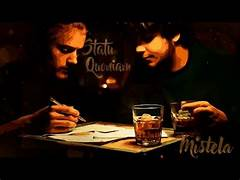
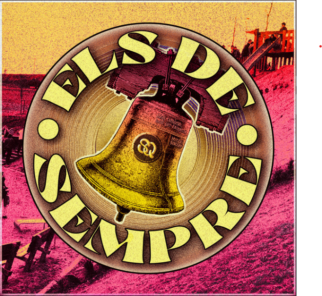

Statu Quoniam és un grup de rap català amb un estil que combina ritmes festius (funk, breaks, electrònica) amb lletres carregades de crítica social, humor i transformació. A mesura que han crescut, han passat d’una fase més independent i “underground” a consolidar-se amb singles cada vegada més polits i, finalment, un LP. La seva música reflecteix tant la comunitat local com les tensions i oportunitats d’una nova generació que s’expressa a través del hip-hop.

Any: 2017
Llista de cançons:
Spotify: Escolta'l

Any: 2025
Llista de cançons:
Spotify: Escolta'l